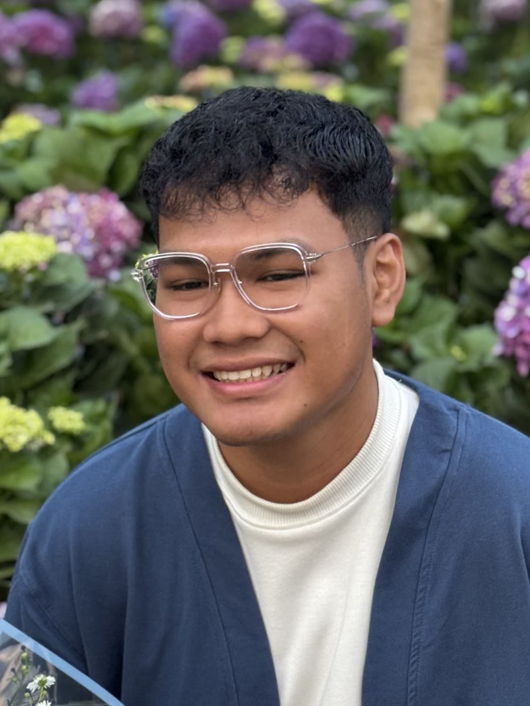
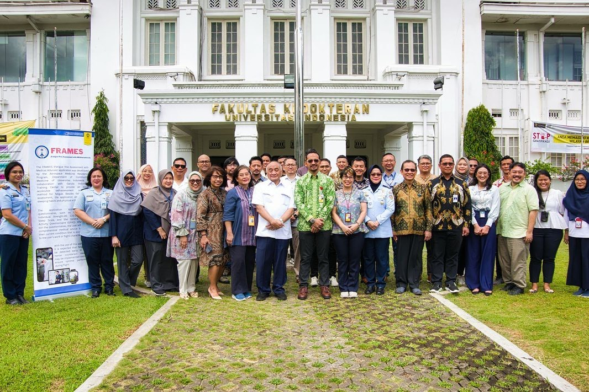
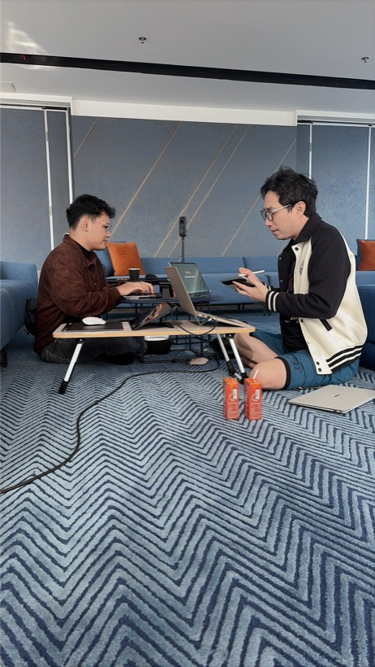
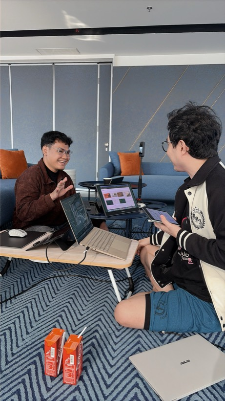
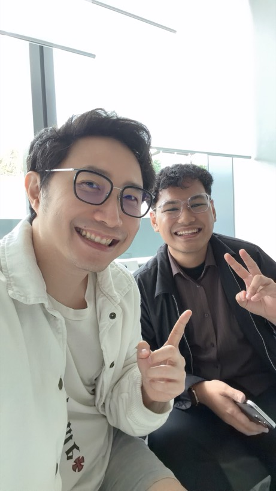
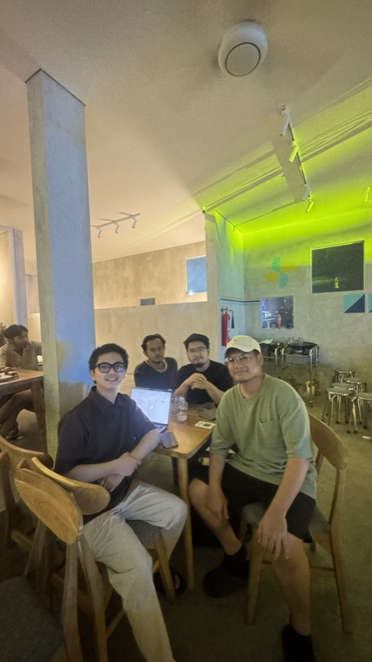
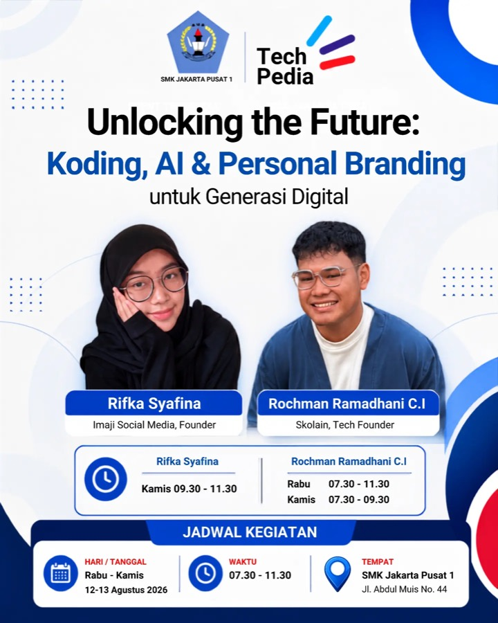
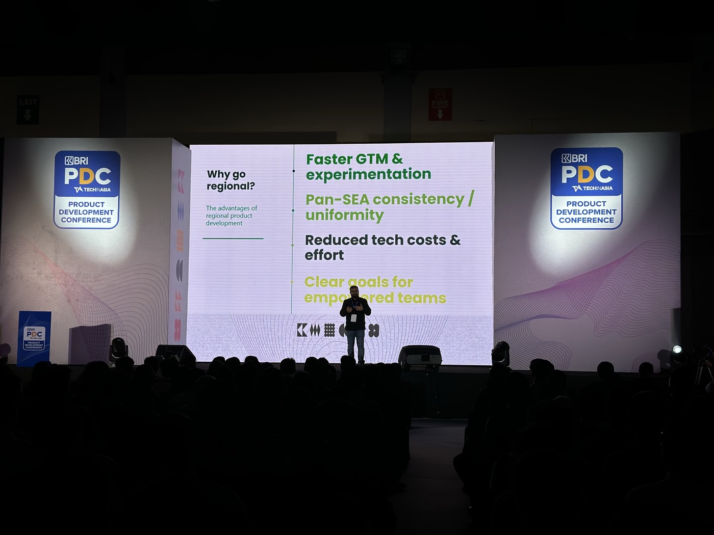

Semua yang saya kerjakan sejak 2017 — sekolah, kontrak, produk yang saya pegang, dan pekerjaan di luar jam kantor yang tidak muat di CV.

sembilan tahun berkaryaSistem HRIS berskala nasional yang harus tetap tenang justru di menit ketika semua orang memakainya sekaligus.
QLOLA adalah platform digital wholesale banking BRI untuk nasabah korporasi. Saya di sisi backend, pada fase integrasi mitra.
Sebagian yang paling saya banggakan tidak punya kolom di CV — bukan jabatan, bukan kontrak penuh waktu.

Coach Rheo menjalankan doatrto.com dan beberapa unit bisnis lain. Saya mendampinginya memakai AI untuk operasional sehari-hari.

sesi kerja
bedah kasus pakai
doatrto.comMendampingi keputusan teknologi dan arah implementasi sistem internal Hegemoni Group.

Interaksi Kopi, Bekasi
